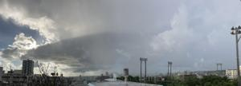
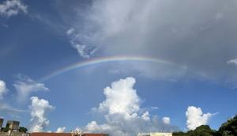
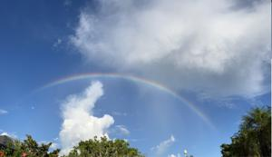
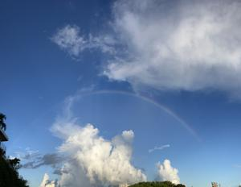
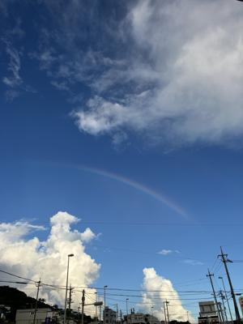
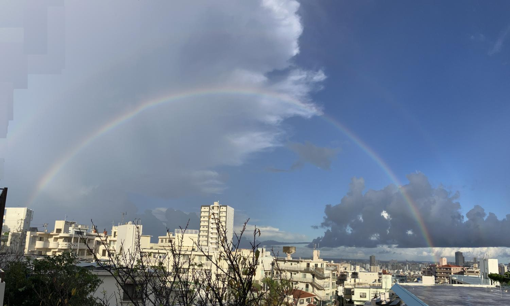

うるがいの話 ある日
最新: 虹また虹【うるがいの話 ある日】とは 一日だけのプログです
『うるがいの話』の最新一日だけのプログで、通信料が少なく経済的だ。カニの画像をクリックすると全ての日付が載る『うるがいの話』サイトを表示します
|
|
【うるがいの話】 うるがい(ｳﾙｶﾞｲ urugai)とは、『もずくがに』の名前でとても大きくなります。 |
|---|---|
|
|
【カミマヤーの話】 猫のことを方言でマヤーといいます。カミマヤー（kamimayaa）とは、神の猫のことです。 |
|
【たながぁの音楽】 たながぁ（ﾀﾅｶﾞｰ tanagaa）とは手長えびのことで、何種類かあり大きいのは車 エビぐらいになります。 |

|
【ぶながぁの話】 ぶながぁ(ﾌﾞﾅｶﾞｰ bunagaa)とは、赤い髪の毛、赤い身体、そして身長は１ｍ２０ｃｍ ぐらい、川の蟹を食べているの目撃された。場所は沖縄県国頭郡大宜味村のと ある村僕の隣近所に住んでいる爺さんから、聞いた話です。 |
|
|
【ギーマの話】 ギーマ(giima)とは、山原の里山に咲くスズランに似た、 花を付けます。実は食べられます、 気が付くと口の周りが紫になっています。 |
2024年09月07日 (土）虹また虹
16:56
『スピリチュアルの世界において、虹は幸運の前触れとされるなど、良い意
味を持つといわれています。』、フムフム、きのうのジョギングへ行くかと
思った夕方、にわか雨が降った。

天気予報をみると雨マーク、ダメかと思ったが部屋に戻ると青い空に虹が。
１７時３７分 部屋からみた虹

傘をもってジョギングへ行く。１７時４９分 公園からみた虹

１８時００分 ３０分経ったけどまだ虹が見える

１８時０６分 ３０分経った、ジョギングの向きが変わる前に最後の写真

今朝、突然にわか雨が降る、そして洗濯物を干そうとベランダへ。
７時０５分見事な西の空に二重の虹（プログでは見えないかも）

１６時４５分 ビットコインの総資産 ￥２２、４１６（↓５０２）